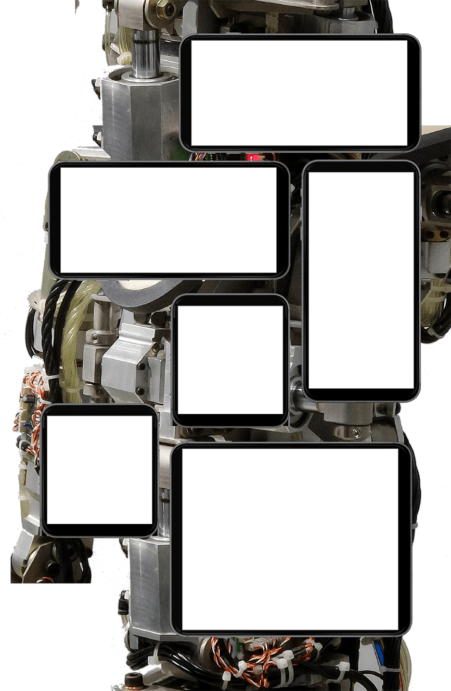
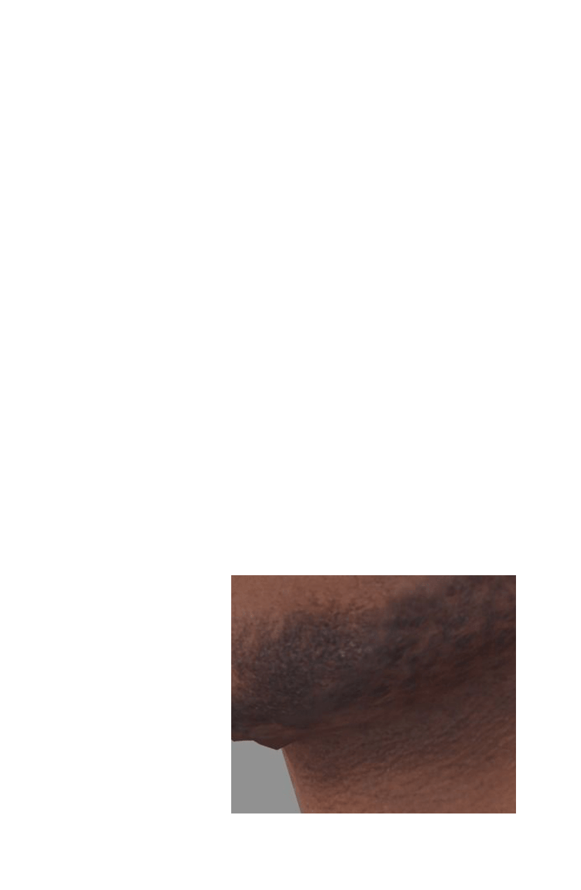
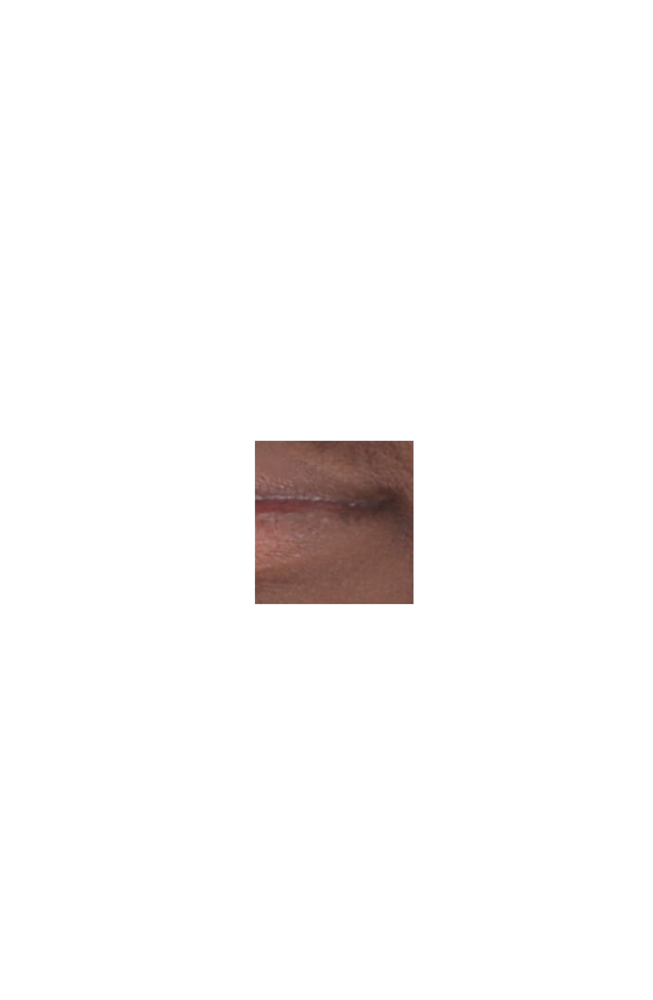
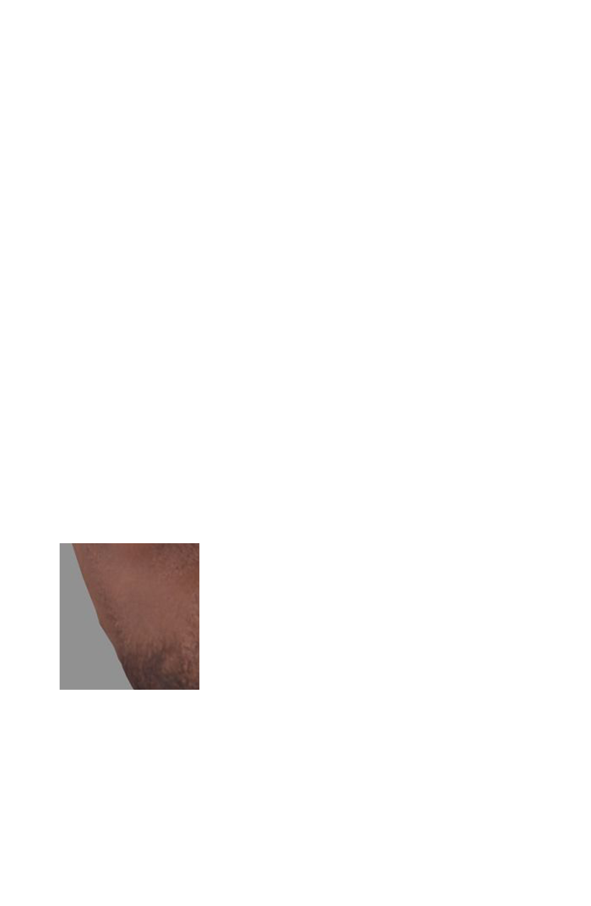
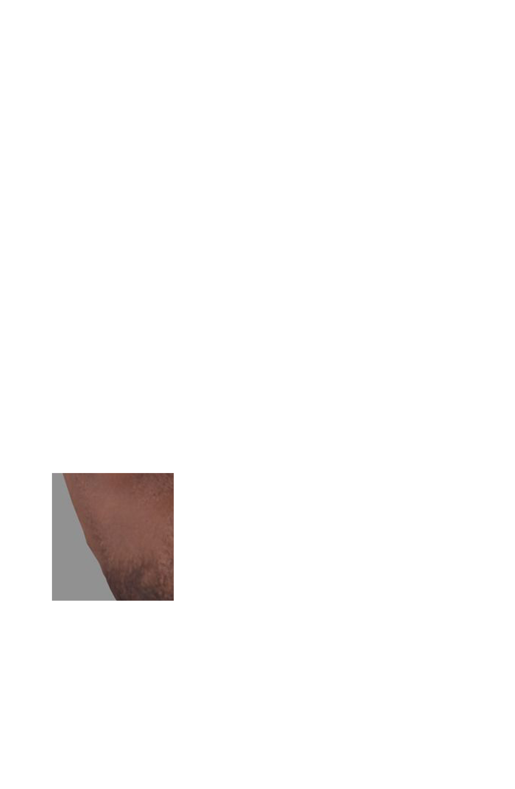
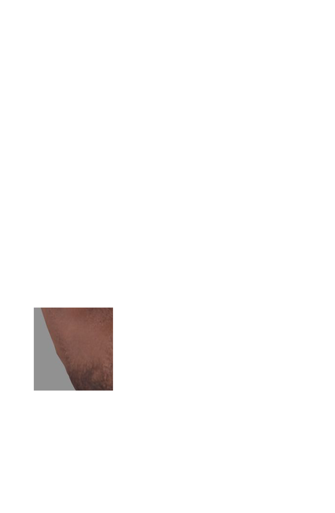
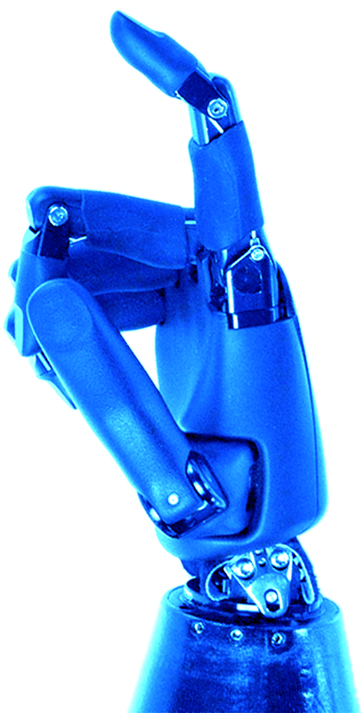
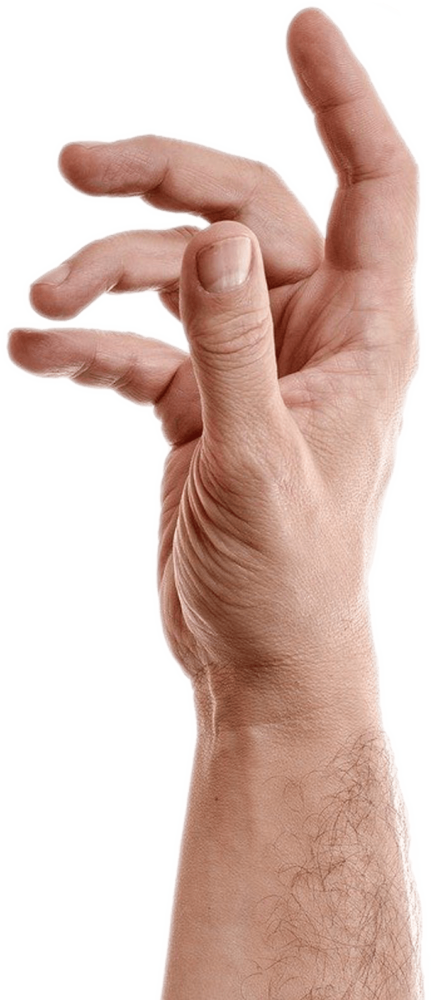

 


좀 괜찮아?
나는 몸을 기계로 바꿔 100년이 지난 지금까지 계속 살고 있었어. 
저들은 순수 인간주의자야.
육체를 온전하게 보존하기 어려울 정도로 다친 사람들까지도
기계로 만드는 것을 막는 운동을 하고 있지.
기계가 되면 지구는 물론 어디서도 살 수 있어.
너도 나처럼 기계 몸으로 옮기는 것은 어떨까?
이미 인공두뇌에 정신까지 완전히 옮길 수 있는 기술이 개발되었어.
만약 싫다면 의학 기술이 가장 발달한 화성으로 갈 수 있게 해줄게.